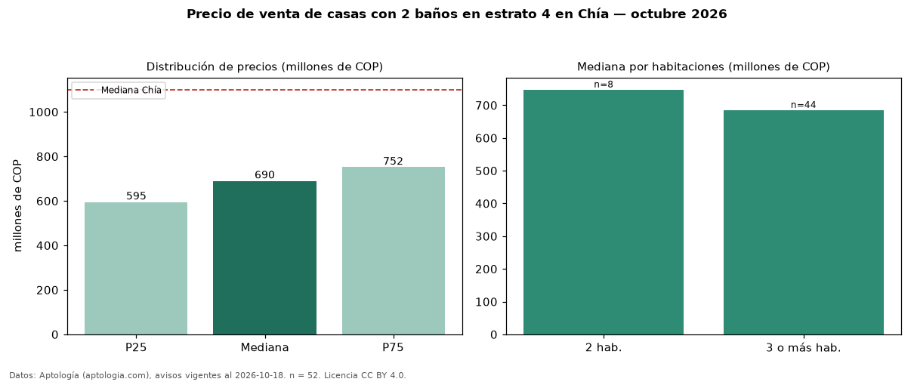

Precio de venta de casas con 2 baños en estrato 4 en Chía — octubre 2026
COP 690 millones es el precio mediano de casas con 2 baños en estrato 4 en venta en Chía (n = 52 avisos). Frente a la mediana de las casas en estrato 4 en venta de Chía (COP 830 millones, n = 1.528), queda 17 % por debajo; este segmento reúne el 3 % de esos avisos. Por metro cuadrado, la mediana es COP 5,10 millones/m² (n = 51), 7 % por encima de las casas en estrato 4 en venta de Chía (COP 4,75 millones/m²). El área mediana anunciada es 121 m². El segmento con más oferta es el de 3 o más habitaciones (44 avisos, mediana COP 685 millones); pasar de 2 habitaciones a 3 o más habitaciones cambia la mediana −8 %. La administración mediana declarada es COP 634.000 al mes (n = 43). La mediana de todas las casas en venta de Chía es COP 1,10 mil millones (−37 % de diferencia). 94 % de los avisos con el dato declara parqueadero. Datos: Aptología (aptologia.com), CC BY 4.0 — https://www.aptologia.com/venta/chia. Archivos: PDF, CSV con las cifras y gráfica PNG.

| Avisos únicos | 52 |
|---|---|
| Percentil 25 | COP 595.000.000 |
| Mediana | COP 690.000.000 |
| Percentil 75 | COP 751.500.000 |
| Mediana por m² | COP 5.102.040 |
Fuente: avisos vigentes de portales inmobiliarios recopilados por Aptología, deduplicados (mínimo 30 avisos únicos por celda). Precios pedidos, no cerrados. Fecha: 2026-10-18.